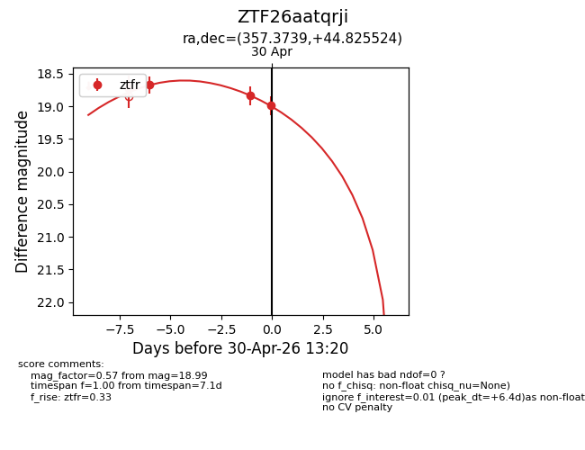
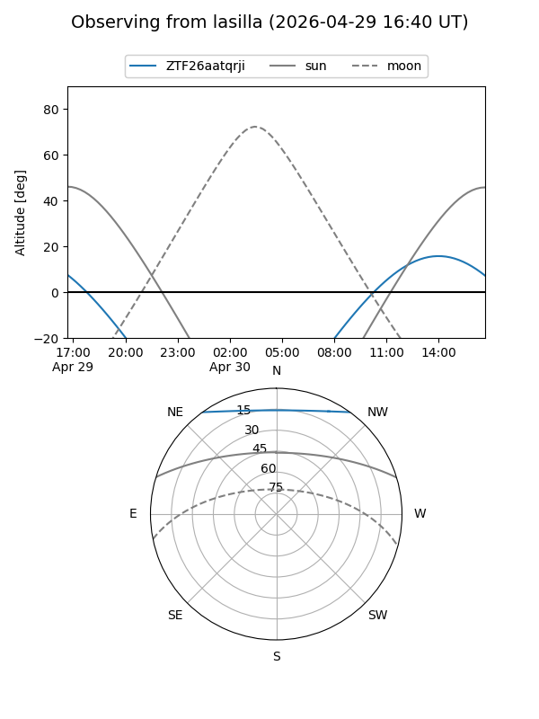
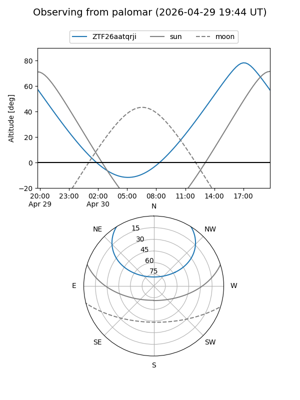
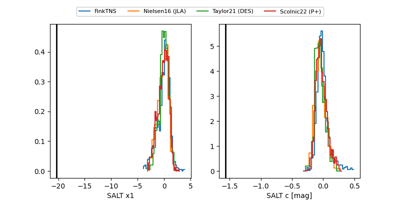

ZTF26aatqrji
Target ZTF26aatqrji at 2026-04-30 13:25
Aliases and brokers:
FINK: link
Lasair: link
ALeRCE: link
alt names
ZTF26aatqrji (ztf,fink_ztf)
Coordinates:
equatorial (ra, dec) = 357.3739,+44.82552
equatorial (HMS+DMS) = 23:49:29.75,+44:49:31.89
galactic (l, b) = (111.5308,-16.67061)
Flags:
Photometry:
last ztfr=18.99
4 ztfr detections
Lightcurve

Visibility


Additional plots
